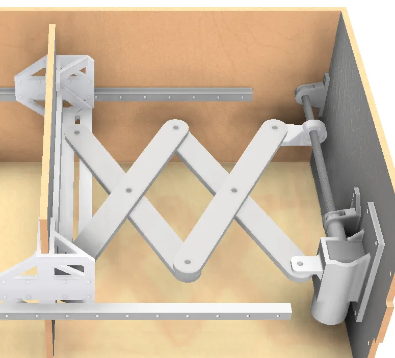
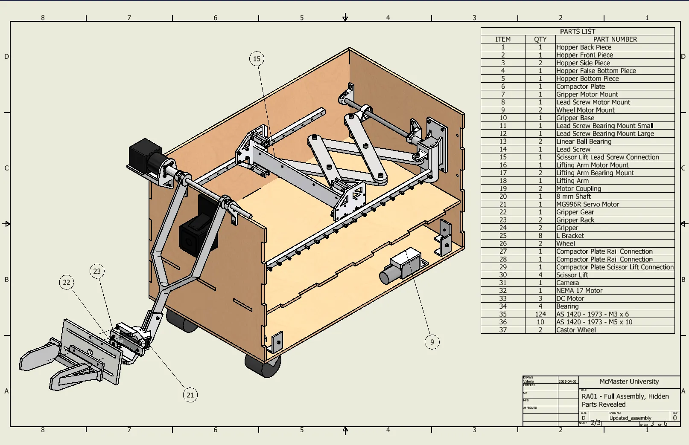

<link rel="stylesheet" href="css/styles.css">
<!-- Navigation Bar -->
     <!-- Social Media Icons -->
     <nav class="nav">
        <div class="nav-content">
            <a class="nav-item active" href="index.html">ABOUT</a> <!-- Link to the main about page -->
            <a class="nav-item" href="experience.html">EXPERIENCE</a> <!-- Link to the new Experience page -->
            <a class="nav-item" href="projects.html">PROJECTS</a> <!-- Link to projects page (if it exists) -->
        </div>
    
        <div class="social-media">
            <a href="https://github.com/dashboard" class="social-link">
                
            </a>
            <a href="https://www.linkedin.com/in/salih-al-tak/" target="_blank" class="social-link">
                
            </a>
            <a href="https://www.instagram.com/_salih_saad/" target="_blank" class="social-link">
                
            </a>
            <a href="mailto:salih.h.altak@gmail.com" class="social-link">
                
            </a>
        </div>
    </nav>
    


    <section class="project-details-section">
        <!-- Header Section: Project Title and Main Image -->
        <div class="header-section">
            <h1 class="project-title">Garbot</h1>
            <div class="main-image-container">
                
            </div>
        </div>

        
        
    <!-- Content Section: What, How, Results -->
<!-- Content Section: What, How, Results -->
<div class="content-section">
    <div class="content-block">
        <h2>Project Goals</h2>
        <ul>
            <li><strong>Move autonomously</strong> (0 man-hours during collection and compaction)</li>
            <li><strong>Operate efficiently</strong> (Collect at least 85% of debris in a 100 m² area within 1 hour)</li>
            <li><strong>Compact debris</strong> (Compact trash to a minimum of 50% of the original volume)</li>
            <li><strong>Operate safely</strong> (FOS > 2 for the gripper and compactor mechanisms, avoid people and animals during operation)</li>
            <li><strong>Locate debris</strong> (Identify at least 85% of trash)</li>
        </ul>
    </div>

    <div class="content-block">
  <h2>Demo Video</h2>
  <div class="video-container">
    <iframe 
      src="https://www.youtube.com/embed/QLogYZApm3Q&t=3s" 
      title="YouTube video"
      frameborder="0"
      allow="accelerometer; autoplay; clipboard-write; encrypted-media; gyroscope; picture-in-picture; web-share"
      allowfullscreen>
    </iframe>
  </div>
</div>

    <div class="content-block">
        <h2>Mechanical Design</h2>
        <p>
            GarBot features a robotic arm, fitted with a gripper at the end to pick up trash and then deposit it into the hopper. The gripper mechanism is opened and closed by a rack and pinon and designed to be fitted with a pressure sensor on the interior of the gripper so that the correct amount of force can be applied when lifting objects. 

            It also features a scissor lift that moves a compaction plate within the hopper, where the collected garbage is stored. This compresses the garbage that has been collected to reduce the amount of space it takes up, so that the robot can collect a larger volume of garbage per trip.
        </p>
    </div>

         <!-- Gallery Section: Additional Images -->
        <div class="gallery-section">
            
            
        </div>
    


    <div class="content-block">
        <h2>AI Object Detection</h2>
        <p>
            GarBot uses the YOLOv11n object detection model from Ultralytics, optimized for real-time performance on a Raspberry Pi 4. This lightweight model was selected for its fast inference speed and solid detection accuracy—crucial for embedded systems with limited resources.

            To maximize performance, the model was exported to NCNN format, allowing efficient CPU-based inference without the need for external accelerators. A custom Python script handles live video input from a USB camera and performs real-time detection, drawing bounding boxes and calculating object distance using the pinhole camera model. The system achieves ±1 cm distance accuracy and maintains a 92% detection confidence, enabling GarBot to detect and approach objects autonomously.
        </p>
    </div>

             <!-- Gallery Section: Additional Images -->
        <div class="gallery-section">
            
        </div>

         <div class="content-block">
        <h2>Electrical System</h2>
        <p>
            The robot's electrical system is divided into two main parts: power and control. A 12V power supply drives three L298N motor controllers, which in turn power the Arduino Uno and the motors. The Raspberry Pi 4, also wall-powered, handles image processing and AI-based object detection. When a target object is detected, the Pi signals the Arduino to control the motors, navigate toward the object, and initiate the collection and compaction sequence. Key components include a high-torque 26:1 stepper motor, an MG996R servo, and three DC motors selected for their speed and strength.
        </p>
    </div>

         <!-- Gallery Section: Additional Images -->
        <div class="gallery-section">
            
            
        </div>
    
         <div class="content-block">
        <h2>Fabrication</h2>
        <p>
            Using a variety of manufacturing methods such as 3D printing, laser cutting, and cutting and machining angle brackets and shafts, a scaled-down prototype of GarBot was created. Images below show the final fabrication.         </p>
    </div>
    
            <div class="gallery-section">
            
            
        </div>

         <div class="content-block">
        <h2>Final Part List</h2>
        <p>
            The drawings below contain a full, labelled parts list for the design of this project.         </p>
    </div>

        
            <div class="gallery-section">
            
            
        </div>

 
              <!-- Resume Section -->
    <div class="resume-section">
        <a href="./Documents/garbot_report.pdf" target="Salih_Al-Tak_Resume.pdf">
            <button class="resume-button">View Full Project Report</button>
        </a>
    </div> 
    
        <!-- Footer Section: Back to Projects Button -->
        <div class="button-container">
            <a href="projects.html" class="back-button">Back to Projects</a>
        </div>
    </section>
    

    <section class="contact-section">

        <footer class="contact-footer">
            
            <div class="social-links">
                <a href="https://github.com/dashboard" class="social-link">
                    
                </a>
                <a href="https://www.linkedin.com/in/salih-al-tak/" target="_blank" class="social-link">
                    
                </a>
                <a href="https://www.instagram.com/_salih_saad/" target="_blank" class="social-link">
                    
                </a>
                <a href="mailto:salih.h.altak@gmail.com" class="social-link">
                    
                </a>
            </div>
            <p>Thank you for visiting my website</p>
        </footer>
    </section>